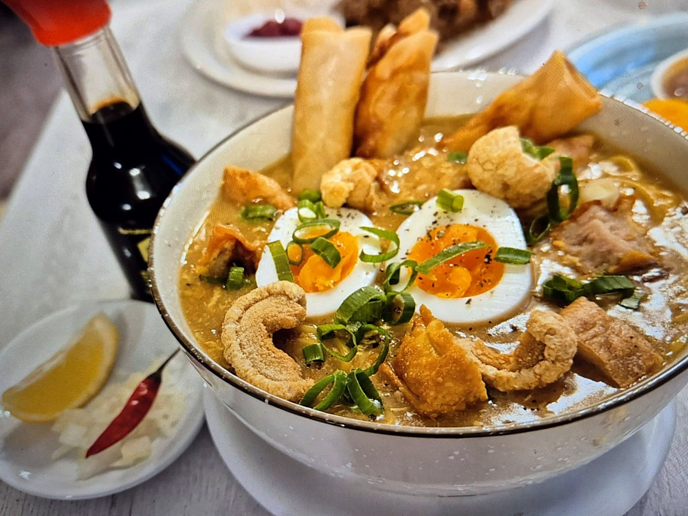

2020
Lutong Bahay
Una cocina doméstica, entregas diarias y una comunidad filipina en Madrid que confió en nosotros cuando nadie podía salir de casa.

Restaurante & cafetería familiar · Tetuán, Madrid
Maximus Haven es el refugio que construimos con el nombre de Maximus. Sisig crujiente, lomi para compartir y el halo-halo del que habla todo Madrid — hecho como en casa, servido con cariño.
En memoria de
Este restaurante lleva el nombre de nuestro hijo Maximus. Él es la razón por la que existe este lugar.
“Haven” significa refugio. Quisimos construir un sitio donde cualquiera pueda sentarse, comer como en casa y sentirse acompañado — la misma calidez que él nos dio a nosotros. Cada mesa servida es una forma de mantener vivo su nombre.
Cuando pruebes nuestro Sisig Max o el Halo-Halo Maxi, ya sabes por quién se llaman así.
Para la familia: aquí irá lo que queráis contar de Maximus — quién era, qué le gustaba, una foto suya si os apetece compartirla. Este texto es provisional hasta que nos lo contéis.
Nuestra historia
Maximus Haven nació como “Lutong Bahay” — comida casera filipina — en plena pandemia. Cocinábamos cada día y llevábamos los platos a casa de quien no podía salir. El sueño era tener un lugar propio, con el nombre de nuestro hijo. Hoy ese lugar existe.
Una cocina doméstica, entregas diarias y una comunidad filipina en Madrid que confió en nosotros cuando nadie podía salir de casa.
Hubo días sin saber a dónde nos llevaría todo esto. Cada pedido, cada visita y cada recomendación fue parte de la respuesta.
La misma comida hecha con corazón, ahora en nuestra propia mesa y con el nombre de nuestro hijo en la puerta. En mayo de 2026 celebramos el primer año dando gracias a Dios y a cada persona que se sentó con nosotros.
Opiniones
Más de 500 personas han dejado su opinión en Google y coinciden: comida abundante, precios justos y una familia que te trata como en casa.
El sisig es lo mejor: crujiente, recién hecho y la ración da para tres o cuatro. Y el lomi, imprescindible.
Después de cinco años en Madrid, puedo decir que este es el restaurante filipino con el mejor halo-halo.
Pedimos un solo lomi para probar, éramos cuatro y no pudimos terminarlo. Delicioso y muy buena relación calidad-precio.
Contacto
Comida en el local, para llevar o a domicilio. Para grupos grandes, llámanos y lo organizamos.
Cómo llegar
Calle Marqués de Cortina 2, junto a la estación de Valdeacederas (L1). Abre el mapa para ver la ruta desde donde estés.